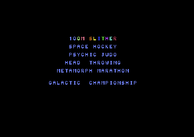
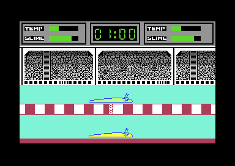
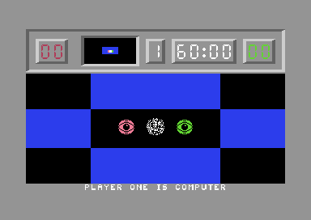
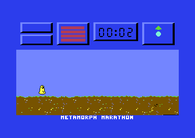

<meta charset="utf-8">
<meta name="viewport" content="width=device-width, initial-scale=1">
<title>Galactic Games: gameplay</title>
<link rel="preconnect" href="https://fonts.googleapis.com">
<link rel="stylesheet" href="https://fonts.googleapis.com/css2?family=Lato:wght@400;700;900&family=IBM+Plex+Mono:wght@400;500&display=swap">
<style>
:root{
  --bg:#23262d; --paper:#e9e7e1; --surface:#ffffff; --surface-2:#f1efea; --line:#d5d3cc; --line-soft:#e0ded8;
  --ink:#2f3136; --ink-soft:#55585f; --ink-mute:#80838a;
  --link:#1f5fa8; --link-hover:#154480; --accent:#1f5fa8;
  --amber:#c25a00; --cyan:#1f5fa8; --coral:#d04a3a; --green:#2a8a4a; --violet:#4a5bd6; --hl:#fff0c2;
  --chip:#2f3136; --chip-ink:#ffffff;
  --c64blue:#40318d; --c64grey:#686868;
  --fd:'Lato',system-ui,sans-serif; --fb:'Lato',system-ui,sans-serif; --fm:'IBM Plex Mono',ui-monospace,Menlo,monospace;
  --col:1080px; --gx:68px; --fs:17px; --lh:1.6; --hw:900; --h1:46px; --h2:26px; --sy:48px; --pp:26px; --r:10px;
  --plate-shadow:0 1px 2px rgba(0,0,0,.05),0 4px 14px rgba(0,0,0,.05);
}
*{box-sizing:border-box}
html{background:var(--bg);min-height:100%}
body{background:var(--paper);color:var(--ink);font-family:var(--fb);font-size:var(--fs);line-height:var(--lh);max-width:var(--col);margin:0 auto;min-height:100vh;padding:0 0 4rem}
h1,h2,h3{font-weight:var(--hw);letter-spacing:-.01em;text-wrap:balance;color:var(--ink);margin:0}
.wrap{padding:0 var(--gx)}
.hero{padding:48px var(--gx) 8px;text-align:left}
.eyebrow{font-family:var(--fm);font-size:12px;letter-spacing:.08em;text-transform:uppercase;color:var(--ink-mute);margin:0 0 10px}
.hero h1{font-size:var(--h1);line-height:1.15;letter-spacing:-.02em;margin:0 0 14px}
.hero .sub{margin:0 0 .6em;color:var(--ink-soft)}
section{padding:var(--sy) 0 24px}
section:last-of-type{border-bottom:none}
.fig{font-family:var(--fm);font-size:12px;letter-spacing:.08em;text-transform:uppercase;color:var(--ink-mute);margin:0 0 10px}
h2.t{font-size:var(--h2);margin-bottom:12px}
.lede{color:var(--ink-soft);margin:0 0 30px}
.plate{background:var(--surface);border:1px solid var(--line);border-radius:var(--r);padding:var(--pp);box-shadow:var(--plate-shadow)}
.cap{font-size:14px;color:var(--ink-mute);margin-top:14px;line-height:1.55}
.cap b{color:var(--ink);font-weight:700}
code{font-family:var(--fm);font-size:.82em;background:var(--chip);color:var(--chip-ink);border-radius:4px;padding:2px 6px;overflow-wrap:break-word;-webkit-box-decoration-break:clone;box-decoration-break:clone}

.plate{margin:0 0 22px}
sup.fn{font-size:.7em;line-height:0}
sup.fn a{text-decoration:none}
sup.fn + sup.fn::before{content:","}
.overview-shot{margin:22px 0}
.overview-shot img{width:100%;max-width:768px;height:auto;aspect-ratio:384/272;image-rendering:pixelated;display:block}
.overview-shot figcaption{font-size:14px;color:var(--ink-mute);margin-top:8px;max-width:768px}
.gg-px{image-rendering:pixelated;display:block;max-width:100%;height:auto;margin:0 auto 10px}
.gg-wide{width:100%}
.gg-read{font-family:var(--fm);font-size:13px;background:var(--surface-2);border-radius:6px;padding:8px 12px;margin:8px 0 10px}
.gg-two{display:grid;grid-template-columns:1fr 1fr;gap:16px;align-items:end}
.gg-two figure{margin:0}
.gg-two figcaption{font-family:var(--fm);font-size:12px;color:var(--ink-mute);text-align:center}
.gg-lab{display:block;font-family:var(--fm);font-size:13px;color:var(--ink-soft);margin:10px 0 4px}
.gg-range{width:100%;max-width:520px;display:block}
.gg-table{border-collapse:collapse;font-size:15px;width:100%;margin:0 0 12px}
.gg-table td,.gg-table th{border-bottom:1px solid var(--line-soft);padding:6px 8px;text-align:left;vertical-align:top}
.gg-scroll{overflow-x:auto}
@media (max-width:760px){:root{--gx:16px;--h1:36px;--pp:14px}.gg-two{grid-template-columns:1fr}}
.gg-map{display:block;image-rendering:pixelated;cursor:crosshair;max-width:none}
.gg-check{display:flex;align-items:center;gap:6px;margin-left:10px;font-family:var(--fm);font-size:13px}
.gg-judo{display:grid;grid-template-columns:auto 1fr;gap:16px;align-items:start}
.gg-judo canvas{max-width:100%;height:auto;cursor:crosshair;image-rendering:auto}
.gg-shields{display:flex;flex-wrap:wrap;gap:6px;align-content:flex-start}
[data-own-look] .gg-shields button,[data-own-look] .gg-run button{font:500 13px var(--fm);padding:6px 10px;border:1px solid var(--line);border-radius:6px;background:var(--surface);color:var(--ink);cursor:pointer}
[data-own-look] .gg-shields button[aria-pressed="true"]{background:var(--btn-on-bg);color:var(--btn-on-ink);border-color:var(--btn-on-line)}
.gg-run{display:flex;gap:8px;flex-wrap:wrap}
[data-own-look] .gg-run button{min-width:96px;padding:10px 14px}
.gg-bar{height:16px;background:var(--surface-2);border:1px solid var(--line);border-radius:6px;overflow:hidden;margin:12px 0 0;max-width:520px}
.gg-bar div{height:100%;width:0;background:repeating-linear-gradient(45deg,#c25a00 0 6px,#e08a3c 6px 12px)}
@media (max-width:760px){.gg-judo{grid-template-columns:1fr}}
</style>

<!-- tabs -->
<header class="hero">
  <p class="eyebrow">Commodore 64 · 1987 · Activision</p>
  <h1>Galactic Games: how the events work</h1>
  <p class="sub">Five events, each a program of its own loaded from disk, and a menu that strings them together into a championship. This page takes them in the order the menu lists them and shows the rules each one's code keeps.</p>
</header>
<main class="wrap">

<section id="menu">
  <p class="fig">01 · The menu</p>
  <h2 class="t">A commentator, a menu, and a disk to turn over</h2>
  <figure class="overview-shot"><figcaption>The menu. UP and DOWN move the highlight, which cycles through twelve colours, and FIRE loads the line (<a href="source-menu.html#0FF4"><code>$0FF4</code></a>).</figcaption></figure>
  <p>The menu is a program called HARRY. Before it lists anything a commentator types a welcome, "WELCOME GALACTI-SPORT FANS...", a letter at a time, with a <a href="graphics.html#ball">spinning ball</a> hopping along behind the cursor; FIRE skips it. The commentator speaks again before each event loads, describing it, and after each one with a remark on how it went, such as "YOU DIDN'T HAVE TO BASH THE SH*T....HELL OUT OF HIM!" The typing click is not a sound effect: the menu leaves three voices running at volume 0 and turns the volume up for an instant at each letter (<a href="source-menu.html#0E90"><code>$0E90</code></a>).</p>
  <p>Each event is a file of its own, PROG0 to PROG4, which the menu loads through the resident fast loader and starts (<a href="source-menu.html#0900"><code>event_entries</code></a>). 100m Slither and Space Hockey are on side 1 of the disk; for the other three the menu asks for side 2, and after an event it asks for side 1 again if the records need saving. Every event opens with its <a href="graphics.html#titles">title in big letters</a> until a key is pressed, and ends with RUN/STOP, which goes straight back to the menu (<a href="controls.html">Controls</a>).</p>
  <p>The first four events are for two players. Each player is asked to press fire, and whichever device answers becomes that player's controls: the keyboard, joystick one, or joystick two. In 100m Slither, Space Hockey, and Psychic Judo, the same fire button answering both prompts means one human, and the computer then plays player one: the pace-maker worm on the far track, or the sphere and mindbender the game announces with "PLAYER ONE IS COMPUTER" (<a href="source-slither.html#0B68"><code>race_restart</code></a>, <a href="source-hockey.html#24BE"><code>$24BE</code></a>, <a href="source-judo.html#3D40"><code>$3D40</code></a>). The human plays player two. The manual says the computer takes the second player, which is the other way round. Head Throwing's players take turns, and the computer steps in as player two only when nobody presses fire for 256 frames before player two's first throw (<a href="source-head.html#1CBB"><code>$1CBB</code></a>).</p>
</section>

<section id="slither">
  <p class="fig">02 · 100m Slither</p>
  <h2 class="t">Bunch, stretch, and keep the slime flowing</h2>
  <figure class="overview-shot"><figcaption>Two worms, two lanes, each scrolling on its own (<a href="source-slither.html#15DA"><code>$15DA</code></a>, <a href="source-slither.html#16DC"><code>$16DC</code></a>). The meters show each worm's temperature and slime.</figcaption></figure>
  <p>A worm moves like a real one. DOWN bunches it up, which adds 2 to its speed, up to 8 (<a href="source-slither.html#3388"><code>st_wait_down</code></a>); UP stretches it out and it slides forward. The rhythm matters because waiting costs speed: while the worm waits for its next press, the game takes 1 off its speed once in every press window (<a href="source-slither.html#34DE"><code>press_up</code></a>, <a href="source-slither.html#350F"><code>press_down</code></a>).</p>
  <p>Holding RIGHT as the worm stretches makes a super-slither: speed 16, twice the normal top speed, for 12 units of slime (<a href="source-slither.html#3247"><code>st_bunched</code></a>). Slime is the worm's coolant as well as its fuel. FIRE squirts 2 units of it and cools the worm by 4 (<a href="source-slither.html#32FF"><code>$32FF</code></a>), and one unit comes back every 200 frames, four seconds (<a href="source-slither.html#31DB"><code>worm_state</code></a>). A worm whose cooling runs out bursts into flames and is out of the race (<a href="source-slither.html#346C"><code>st_burnt</code></a>).</p>
  <p>The clock counts hundredths, 2 a frame. At 70 seconds any worm still racing is put out, with "TIME LIMIT EXCEEDED RACE TERMINATED" (<a href="source-slither.html#12F8"><code>race_check</code></a>). Playing alone, worm one in the far lane is the computer's pace-maker, which plays back a script of controls and how long to hold them (<a href="source-slither.html#3674"><code>$3674</code></a>).</p>
  <p>Every move the worm makes is one of eleven animations: watch them on the <a href="graphics.html#worms">Graphics</a> tab.</p>
</section>

<section id="hockey">
  <p class="fig">03 · Space Hockey</p>
  <h2 class="t">Black holes for goals, and a puck that does not want to go in</h2>
  <figure class="overview-shot"><figcaption>The field scrolls with the puck. The scanner at the top shows the puck, both players and the view's window (<a href="source-hockey.html#188A"><code>place_dots</code></a>).</figcaption></figure>
  <p>Two spheres push a living puck around a field with a black hole at each end. Each hole pulls whatever is near it, through a grid of 16 by 8 pull values over the field (<a href="source-hockey.html#1B15"><code>$1B15</code></a>). The puck feels the same pull the other way: it is pushed away from the holes, so it has to be knocked in. After a hit it is dazed for a moment, and only then does the pull draw it in; each daze lasts 4 frames longer than the last, up to 150 (<a href="source-hockey.html#219F"><code>$219F</code></a>).</p>
  <table class="gg-table">
    <tr><th>What happens</th><th>Points</th></tr>
    <tr><td>The puck falls into the right-hand hole</td><td>3 to player one</td></tr>
    <tr><td>The puck falls into the left-hand hole</td><td>3 to player two</td></tr>
    <tr><td>A player falls into either hole</td><td>1 to the other player</td></tr>
  </table>
  <p class="cap">From <a href="source-hockey.html#0D91"><code>$0D91</code></a>.</p>
  <p>The players bounce off each other and off the puck. FIRE is a brake: for five frames it stops the bounce after a hit (<a href="source-hockey.html#1DF5"><code>read_controls</code></a>). A match is four rounds of 60 seconds, and level scores after the fourth give an overtime round (<a href="source-hockey.html#0CC1"><code>$0CC1</code></a>). The computer decides its move every 13 frames (<a href="source-hockey.html#1EC1"><code>$1EC1</code></a>). Before the first match after loading, the computer plays player one, and when a match ends the event plays a demo until fire is pressed (<a href="source-hockey.html#0C93"><code>$0C93</code></a>). The Commodore key pauses the game, which the manual does not mention (<a href="discoveries.html#pause">Discoveries</a>).</p>
</section>

<section id="judo">
  <p class="fig">04 · Psychic Judo</p>
  <h2 class="t">Bolts of energy, shields over six zones</h2>
  <p class="lede">Each half of the screen is one player's view down the arena towards the other. Holding FIRE charges a bolt from the reserve; releasing it throws the bolt, and the stick steers it. At the far end the bolt either misses, strikes a shield, or hits.</p>
  <div class="plate" data-own-look>
    <div class="gg-judo">
      <canvas id="jMap" class="gg-px" aria-label="The opponent's body as the game tests it: 16 by 16 cells, with the shielded zones marked"></canvas>
      <div class="gg-shields" id="jShields" role="group" aria-label="The shield the opponent holds"></div>
    </div>
    <p class="gg-read" id="jRead">Pick the opponent's shield, then click a cell to throw a bolt at it.</p>
    <p class="cap">The body is the 16 x 16 cells of <a href="source-judo.html#2C5A"><code>body_map</code></a>, each cell's zone from <a href="source-judo.html#2D5A"><code>body_zones</code></a>, numbered here 1 and 2 for the top left and right, 3 and 4 for the middle, 5 and 6 for the bottom; the unnumbered middle column counts for both sides. The shields are <a href="source-judo.html#2122"><code>shield_zones</code></a>, one for each stick position in <a href="source-judo.html#2115"><code>shield_dirs</code></a>. A bolt is tested only when it reaches the far end, at its across and height divided by four (<a href="source-judo.html#2B37"><code>judge_bolt1</code></a>, <a href="source-judo.html#2C30"><code>body_test</code></a>). Shielded cells are drawn with a cross.</p>
  </div>
  <p>Charging takes 1 from the reserve every 5 frames, up to 12 (<a href="source-judo.html#3567"><code>timers</code></a>). A bolt that meets a shield is caught: the catcher's reserve gains its energy, at most 47. Shields are not free: every 25 frames a raised shield costs 1 from the reserve for each zone it covers, and drops when the reserve runs out (<a href="source-judo.html#3567"><code>$3567</code></a>), so a two-zone shield costs twice as much as a one-zone one. A bolt that finds an open zone is a hit, and the player hit loses one and a half times its energy. A round lasts 60 seconds, or until a reserve runs out (<a href="source-judo.html#1DE5"><code>$1DE5</code></a>, <a href="source-judo.html#1DB8"><code>$1DB8</code></a>); a round that runs out of time is played again, and the match is best of five (<a href="source-judo.html#1D2A"><code>$1D2A</code></a>). The computer player is a machine of six states, which aims for the zones the opponent leaves open and raises a shield on the side a bolt is coming (<a href="source-judo.html#6900"><code>$6900</code></a>).</p>
</section>

<section id="head">
  <p class="fig">05 · Head Throwing</p>
  <h2 class="t">Run, aim, throw your head, flap your ears</h2>
  <p class="lede">A Hruntan's head comes off, and the event is to throw it as far as possible. The run-up is the familiar sports-game waggle: alternate LEFT and RIGHT. Try it here, with the buttons or the arrow keys.</p>
  <div class="plate" data-own-look>
    <div class="gg-run"><button type="button" id="hL">LEFT</button><button type="button" id="hR">RIGHT</button><button type="button" id="hReset">Start again</button></div>
    <div class="gg-bar" aria-hidden="true"><div id="hBar"></div></div>
    <p class="gg-read" id="hRead"></p>
    <p class="cap">The game's rule from <a href="source-head.html#1AC4"><code>$1AC4</code></a>: each press of the other direction adds 4 + (255 − speed) / 32 to the speed, at most 255, and the speed falls by 1 every frame. Pressing the same direction twice adds nothing. Close to the line, past track position 69, the friction is four times as strong and the thrower can no longer throw.</p>
  </div>
  <p>FIRE plants the thrower at the end of a stride. While FIRE is held the head's angle drops a step every 10 frames from level, 8, towards 0, straight up; releasing FIRE throws, and at 0 the head goes by itself. The launch comes from the speed and the angle: up by speed × sine / 32 + 20, forward by speed × cosine / 16 + 20. In the air, DOWN flaps the <a href="graphics.html#head">ears</a> for ten frames of lift, gravity of 100 in place of 256, and UP is needed between flaps. FIRE again starts the head turning so the nose comes down first: it sticks only at an angle from 12 to 15 of its 32, and a head that lands at any other angle tips over and the throw is void (<a href="source-head.html#1693"><code>st_throw</code></a>).</p>
  <p>Distance is counted only once the head passes the foul line at track position 70, in metres and centimetres. Each player has three throws and the longest wins (<a href="source-head.html#1EBC"><code>end_contest</code></a>), although close throws are not always judged right: see <a href="discoveries.html#draw">Discoveries</a>. Left alone for 256 frames at the first throw, player one's turn becomes a demo and player two's goes to the computer, which runs up a little faster than the best human run so far and flaps every 15 frames.</p>
</section>

<section id="marathon">
  <p class="fig">06 · Metamorph Marathon</p>
  <h2 class="t">One creature, four ways to get past an obstacle</h2>
  <figure class="overview-shot"><figcaption>The Metamorph at the start. Above the course: the power and progress bars, four red energy bars, the clock, and an icon of the four forms.</figcaption></figure>
  <p>The Marathon is a race against the clock, over <a href="levels.html">a course 256 tiles long</a>. The Metamorph rests as a blob, and the stick changes it: RIGHT to the Runner, LEFT to the Burrower, DOWN to the Jumper, UP to the Flyer (<a href="source-marathon.html#2821"><code>pick_runner</code></a>, <a href="source-marathon.html#283D"><code>pick_burrower</code></a>, <a href="source-marathon.html#2887"><code>pick_jumper</code></a>, <a href="source-marathon.html#2854"><code>pick_flyer</code></a>). FIRE turns it back into the blob, and every change of form goes through the blob (<a href="source-marathon.html#27D1"><code>to_blob</code></a>). The Runner covers level ground, the Burrower digs through any rock without the "too hard" mark on the <a href="levels.html#course">map</a>, the Jumper springs and is the one form that lands safely from a height (<a href="source-marathon.html#228D"><code>check_walls</code></a>), and the Flyer climbs while UP keeps its power building.</p>
  <p>Two players can take turns at the course: player one runs, then "PLAYER TWO PRESS FIRE TO START" asks for player two, and if nobody answers the turn goes back to player one (<a href="source-marathon.html#1FDC"><code>marathon_main</code></a>, <a href="source-marathon.html#2EA4"><code>$2EA4</code></a>). The event keeps a best time for each (<a href="source-marathon.html#306A"><code>best_times</code></a>).</p>
  <p>Energy is a 16-bit count, 1,023 when full, shown as four bars of 256 (<a href="source-marathon.html#1F1F"><code>$1F1F</code></a>). It drains every 20 frames while the run goes on, a fall of 24 or more costs some, and each of the sixteen power pills adds 255 (<a href="source-marathon.html#2E4E"><code>take_pill</code></a>). When it runs out, the Metamorph falls apart and the run is over. At the finish, the energy left comes off the time, a second for every eight units (<a href="source-marathon.html#25FA"><code>count_bonus</code></a>).</p>
</section>

<section id="championship">
  <p class="fig">07 · Records and the championship</p>
  <h2 class="t">Five events in a row, and a champion's name on the disk</h2>
  <p>After every event the resident code checks the two players' results against that event's record (<a href="source-resident.html#D005"><code>$D005</code></a>): the lower time wins in 100m Slither, Psychic Judo, and the Marathon, the higher score in Space Hockey and Head Throwing. A new record is kept, and the menu saves the file RECO to side 1 of the disk (<a href="source-resident.html#08FE"><code>$08FE</code></a>). The disk as it came holds 35.45 seconds for Slither, 21 points for Hockey, 59.78 seconds for Judo, 65.93 metres for Head Throwing, and 7 minutes 2 seconds for the Marathon (<a href="source-resident.html#BC64"><code>$BC64</code></a>).</p>
  <p>The menu's last line, the Galactic Championship, sets a flag (<a href="source-resident.html#B800"><code>$B800</code></a>) and loads the five events one after another; each keeps its results for the end. After the Marathon the resident shows the records, then turns every result into points with a routine that lives in the Marathon's file (<a href="source-marathon.html#AD0C"><code>score_events</code></a>), prints both players' totals, and compares them with the Galactic Champion's record. The disk's champion is RIVA, with 1,000 points (<a href="source-resident.html#BC8C"><code>champ_record</code></a>). A player who beats that types a name of up to eight letters, RETURN to finish and the left-arrow key to rub out (<a href="source-resident.html#D619"><code>$D619</code></a>). The championship then ends with a sixth title screen, which reads THE END (<a href="graphics.html#titles">Graphics</a>).</p>
</section>
</main>

<script src="../../lib/c64.js"></script>
<script>
(function () {
  const $ = id => document.getElementById(id);
  // Head Throwing's run-up, from $1AC4: each change of direction adds 4 + ((255 - speed) >> 5), at most 255; friction 1 a frame.
  let speed = 0, last = 0, frames = 0, presses = 0, best = 0;
  const show = () => { $('hBar').style.width = (speed / 255 * 100) + '%'; $('hRead').textContent = `speed ${speed} of 255 · best ${best} · ${presses} presses`; };
  const press = d => { if (d === last) return; last = d; presses++; speed = Math.min(255, speed + 4 + ((255 - speed) >> 5)); best = Math.max(best, speed); show(); };
  $('hL').onclick = () => press(4); $('hR').onclick = () => press(8);
  $('hReset').onclick = () => { speed = 0; last = 0; presses = 0; best = 0; show(); };
  const sec = $('head');
  document.addEventListener('keydown', e => { const r = sec.getBoundingClientRect(); if (r.bottom < 0 || r.top > innerHeight) return;
    if (e.key === 'ArrowLeft') { press(4); e.preventDefault(); } if (e.key === 'ArrowRight') { press(8); e.preventDefault(); } });
  setInterval(() => { if (speed > 0) { speed--; show(); } }, 20);
  show();

  if (typeof C64 === 'undefined') { $('jRead').textContent = 'The body map needs the site\'s c64.js, which loads only on the built site.'; return; }
  C64.load('parts/judo/listing.json').then(L => {
    const m = L.ram, cv = $('jMap'), S = 22, ctx = C64.canvas(cv, 16 * S, 16 * S);
    const pos = [['none', 0], ['up', 1], ['down', 2], ['left', 4], ['right', 8], ['up-left', 5], ['up-right', 9], ['down-left', 6], ['down-right', 10], ['fire', 16], ['fire + up', 17], ['fire + down', 18], ['fire + left', 20], ['fire + right', 24]];
    const zoneOf = stick => { if (!stick) return 0; for (let i = 0; i < 13; i++) if (m[0x2115 + i] === stick) return m[0x2122 + i]; return 0; };
    const zname = { 1: 'top left', 2: 'top right', 4: 'middle left', 8: 'middle right', 0x10: 'bottom left', 0x20: 'bottom right' };
    let shield = 0, hit = null;
    const draw = () => { ctx.fillStyle = '#23262d'; ctx.fillRect(0, 0, cv.width, cv.height);
      ctx.font = '600 10px "IBM Plex Mono",monospace'; ctx.textAlign = 'center'; ctx.textBaseline = 'middle';
      for (let y = 0; y < 16; y++) for (let x = 0; x < 16; x++) { const i = y * 16 + x, body = m[0x2C5A + i], z = m[0x2D5A + i], px = x * S, py = y * S;
        if (!body) { ctx.strokeStyle = '#3a3d45'; ctx.strokeRect(px + .5, py + .5, S - 1, S - 1); continue; }
        const on = (z & shield) !== 0; ctx.fillStyle = on ? '#e9e7e1' : '#80838a'; ctx.fillRect(px + 1, py + 1, S - 2, S - 2);
        if (on) { ctx.strokeStyle = '#1f5fa8'; ctx.lineWidth = 2; ctx.beginPath(); ctx.moveTo(px + 4, py + 4); ctx.lineTo(px + S - 4, py + S - 4); ctx.moveTo(px + S - 4, py + 4); ctx.lineTo(px + 4, py + S - 4); ctx.stroke(); ctx.lineWidth = 1; }
        ctx.fillStyle = '#2f3136'; if (!on) ctx.fillText([1, 2, 4, 8, 16, 32].indexOf(z & 0x3F) + 1 || '', px + S / 2, py + S / 2); }
      if (hit) { ctx.strokeStyle = '#d04a3a'; ctx.lineWidth = 3; ctx.strokeRect(hit[0] * S + 1.5, hit[1] * S + 1.5, S - 3, S - 3); ctx.lineWidth = 1; } };
    const box = $('jShields');
    pos.forEach(([n, st]) => { const b = document.createElement('button'); b.type = 'button'; b.textContent = n; b.setAttribute('aria-pressed', st === 0);
      b.onclick = () => { shield = zoneOf(st); box.querySelectorAll('button').forEach(x => x.setAttribute('aria-pressed', x === b));
        const zs = Object.keys(zname).filter(k => shield & k).map(k => zname[k]); $('jRead').textContent = 'Stick ' + n + ': ' + (zs.length ? 'shield over ' + zs.join(' and ') : 'no shield') + '. Click a cell to throw a bolt at it.'; hit = null; draw(); };
      box.appendChild(b); });
    cv.onclick = e => { const r = cv.getBoundingClientRect(), x = Math.floor((e.clientX - r.left) / r.width * 16), y = Math.floor((e.clientY - r.top) / r.height * 16), i = y * 16 + x; hit = [x, y];
      const body = m[0x2C5A + i], z = m[0x2D5A + i];
      $('jRead').textContent = !body ? `Cell ${x}, ${y}: not the body. A miss.` : (z & shield) ? `Cell ${x}, ${y}: shielded. The bolt is caught and its energy goes to the catcher's reserve.` : `Cell ${x}, ${y}: zone ${Object.keys(zname).filter(k => z & k).map(k => zname[k]).join(' and ')}, open. A hit: one and a half times the bolt's energy lost.`;
      draw(); };
    draw();
  });
})();
</script>
